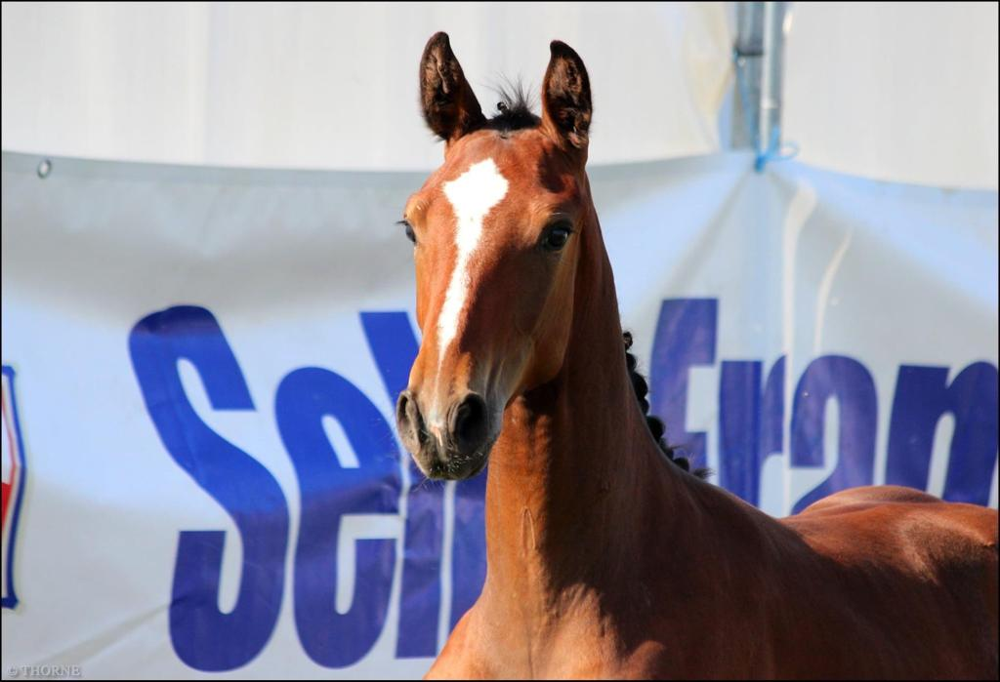
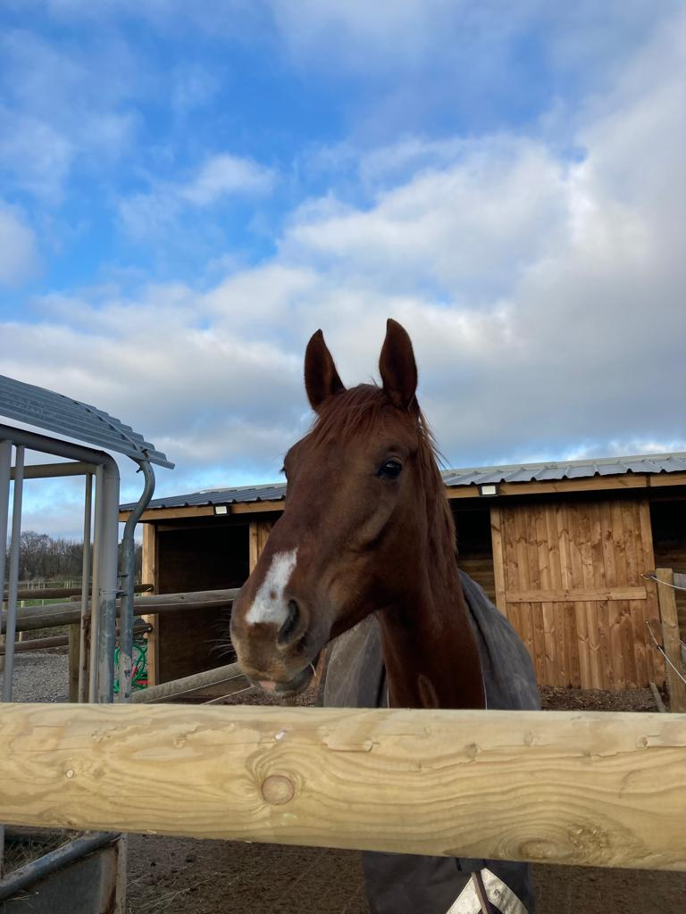
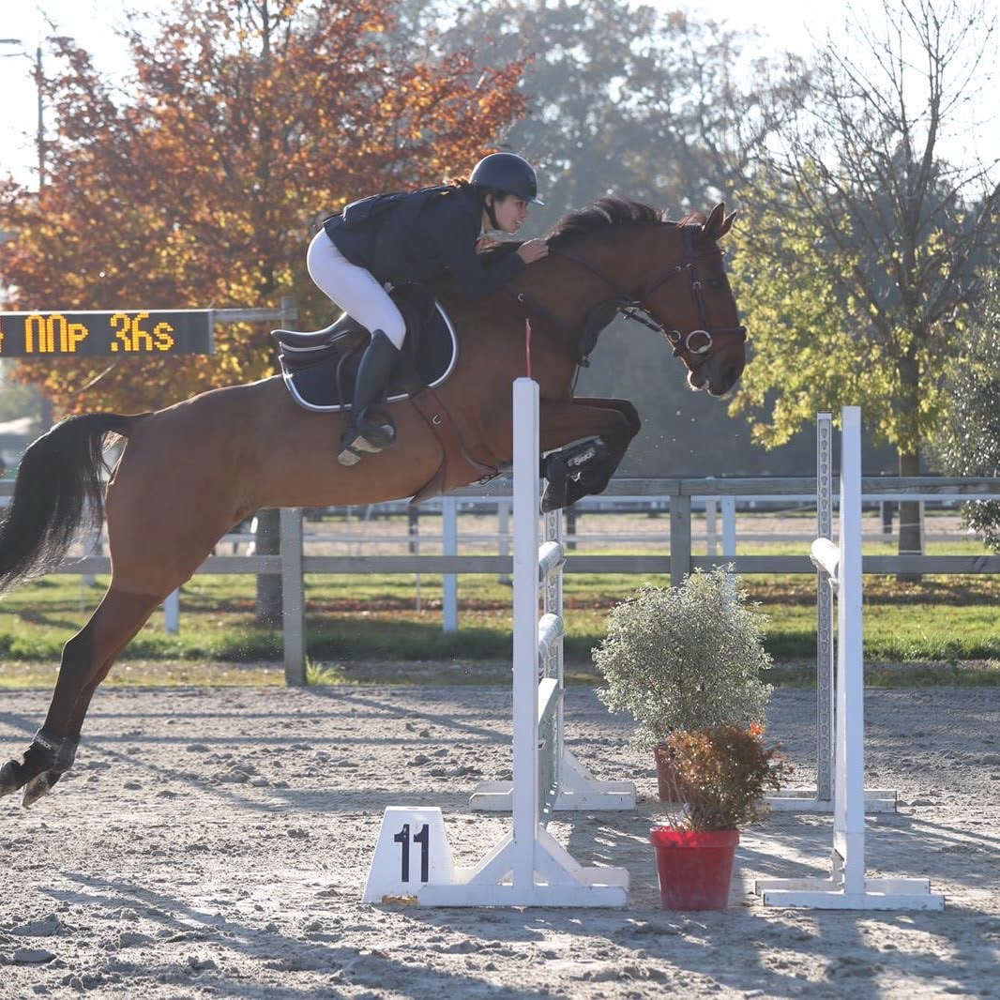

Nos origines
Lyrae de la Thorne (Andiamo de Semilly x Elan de la Cour)
Lyrae est une pouliche acquise par l'élevage lorsqu'elle avait un peu moins d'un an. Aujourd'hui, elle a deux ans et elle montre déjà la qualité de ses parents tel que l'équilibre ou les allures.
Java de la Vanrie (Ogrion des Champs x Quredo Polstra)
Java est arrivée au sein de l'élevage au mois de décembre 2021. Elle a aujourd'hui 4 ans. C'est une jument très proche de l'homme et avec une très bonne tête père comme beaucoup des produits d'Ogrion des Champs. Elle a été débourré depuis peu et continue donc le trvail pour pouvoir peu à peu intégré le circuit jeunes chevaux.
Gallina H ( I am Moerhoeve's Star x Double Espoir)
Gallina est la seule jument qui tourne actuelleemnt en concours. Elle enchaine actuellement des épreuves Amateur 1 avec Ayako. Cette jument belge de 11 ans est pleine de sang et d'énergie. Elle a un mental très compétitif et se fait remarquer pour son coup de saut digne de celui de son grand père.
Les produits de l'élevage